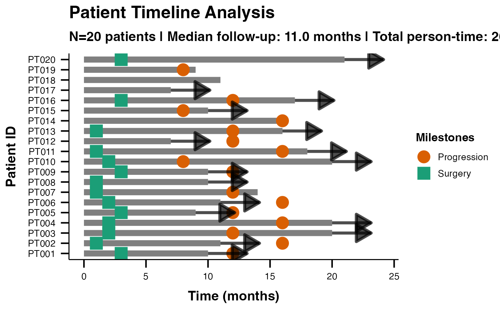

swimmerplot.RdCreates comprehensive swimmer plots using the ggswim package to visualize patient timelines, clinical events, milestones, and treatment responses. Features enhanced data validation and complete ggswim integration for professional clinical visualization.
swimmerplot(
data,
patientID,
startTime,
endTime,
responseVar,
timeType = "raw",
dateFormat = "ymd",
timeUnit = "months",
timeDisplay = "relative",
maxMilestones = 5,
milestone1Name = "Surgery",
milestone1Date = NULL,
milestone2Name = "Treatment Start",
milestone2Date = NULL,
milestone3Name = "Response Assessment",
milestone3Date = NULL,
milestone4Name = "Progression",
milestone4Date = NULL,
milestone5Name = "Death/Last Follow-up",
milestone5Date = NULL,
showEventMarkers = FALSE,
eventVar = NULL,
eventTimeVar = NULL,
laneWidth = 3,
markerSize = 5,
plotTheme = "ggswim",
showLegend = TRUE,
referenceLines = "none",
customReferenceTime = 12,
sortVariable = NULL,
sortOrder = "duration_desc",
showInterpretation = TRUE,
personTimeAnalysis = TRUE,
responseAnalysis = TRUE,
exportTimeline = FALSE,
exportSummary = FALSE
)The data as a data frame containing patient timeline information.
Variable containing unique patient identifiers.
Time/date when observation/treatment started.
Time/date when observation/treatment ended.
Optional variable for response types (e.g., CR, PR, SD, PD) to color lanes.
Select whether time values are raw numbers or dates/times.
Select the date/time format in your data (only used when Time Input Type is Date/Time).
Time unit to use for display and calculations.
Choose whether to align all start times to 0 or use absolute start times.
Maximum number of milestone events to support.
Name for the first milestone event (e.g., Surgery, Treatment Start).
Date/time variable when milestone 1 occurred.
Name for the second milestone event.
Date/time variable when milestone 2 occurred.
Name for the third milestone event.
Date/time variable when milestone 3 occurred.
Name for the fourth milestone event.
Date/time variable when milestone 4 occurred.
Name for the fifth milestone event.
Date/time variable when milestone 5 occurred.
Whether to display event markers along patient timelines.
Variable containing event type labels for markers.
Variable containing event times (defaults to start time if not specified).
Width/thickness of patient timeline lanes.
Size of event markers and milestone markers.
Visual theme for the swimmer plot.
Whether to display the plot legend.
Add reference time lines to the plot for clinical context.
Custom time point to mark with a reference line (only used when Reference Lines is set to Custom).
Optional variable to sort patient timelines (defaults to duration-based sorting).
How to order patients in the visualization.
Whether to display automated clinical interpretation of the timeline data.
Whether to include epidemiological person-time metrics in the analysis.
Whether to analyze response patterns when response variable is provided.
Export processed timeline data for external analysis.
Export comprehensive summary statistics and clinical metrics.
A results object containing:
results$instructions | a html | ||||
results$plot | an image | ||||
results$summary | a table | ||||
results$interpretation | a html | ||||
results$personTimeTable | a table | ||||
results$milestoneTable | a table | ||||
results$eventMarkerTable | a table | ||||
results$timelineData | an output | ||||
results$summaryData | an output | ||||
results$exportInfo | a html | ||||
results$validationReport | a html | ||||
results$advancedMetrics | a table |
Tables can be converted to data frames with asDF or as.data.frame. For example:
results$summary$asDF
as.data.frame(results$summary)
# \donttest{
# Clinical trial swimmer plot example
data <- data.frame(
PatientID = paste0("PT", formatC(1:20, width = 3, flag = "0")),
StartTime = rep(0, 20),
EndTime = sample(6:24, 20, replace = TRUE),
Response = sample(c("CR", "PR", "SD", "PD"), 20, replace = TRUE),
Surgery = sample(c(1, 2, 3, NA), 20, replace = TRUE),
Progression = sample(c(8, 12, 16, NA), 20, replace = TRUE)
)
swimmerplot(
data = data,
patientID = "PatientID",
startTime = "StartTime",
endTime = "EndTime",
responseVar = "Response",
milestone1Name = "Surgery",
milestone1Date = "Surgery",
milestone2Name = "Progression",
milestone2Date = "Progression",
showEventMarkers = TRUE,
showInterpretation = TRUE
)
#>
#> SWIMMER PLOT
#>
#> character(0)
#>
#> Timeline Summary Statistics
#> ───────────────────────────────────
#> Metric Value
#> ───────────────────────────────────
#> Number of Patients 20.00000
#> Total Observations 20.00000
#> Median Duration 11.00000
#> Mean Duration 13.35000
#> Total Person-Time 267.00000
#> Mean Follow-up 13.35000
#> CR Rate (%) 25.00000
#> PD Rate (%) 20.00000
#> PR Rate (%) 35.00000
#> SD Rate (%) 20.00000
#> ───────────────────────────────────
#>
#>
#> <div style='background-color: #e8f5e8; padding: 15px; border-radius:
#> 5px; margin: 10px 0;'>
#>
#> Clinical Interpretation
#>
#> <div style='margin: 10px 0;'><h5 style='color: #2e7d32;'>Timeline
#> Analysis:
#>
#> Study included 20 patients with 20 timeline observations. Median
#> follow-up was 11.0 months (range: 7.0 to 21.0 months).
#>
#> <div style='margin: 10px 0;'><h5 style='color: #2e7d32;'>Person-Time
#> Analysis:
#>
#> Total person-time: 267.0 months. Average follow-up per patient: 13.3
#> months.
#>
#> <div style='margin: 10px 0;'><h5 style='color: #2e7d32;'>Response
#> Pattern Analysis:
#>
#> Most common response was PR (35.0% of observations). Response
#> distribution shows clinical patterns suitable for efficacy analysis.
#>
#> Person-Time Analysis
#> ──────────────────────────────────────────────────────────────────────────
#> Response Type Patients Total Time Mean Time Incidence Rate
#> ──────────────────────────────────────────────────────────────────────────
#> ──────────────────────────────────────────────────────────────────────────
#>
#>
#> Milestone Event Summary
#> ────────────────────────────────────────────────────
#> Milestone Events Median Time Time Range
#> ────────────────────────────────────────────────────
#> ────────────────────────────────────────────────────
#>
#>
#> Event Marker Summary
#> ────────────────────────────────────────────────────
#> Event Type Count Percentage Median Time
#> ────────────────────────────────────────────────────
#> ────────────────────────────────────────────────────
#>
#>
#> Advanced Clinical Metrics
#> ──────────────────────────────────────────────────────
#> Metric Value Unit Clinical Interpretation
#> ──────────────────────────────────────────────────────
#> ──────────────────────────────────────────────────────
#>
#> Warning: The `size` argument of `element_line()` is deprecated as of ggplot2 3.4.0.
#> ℹ Please use the `linewidth` argument instead.
#> ℹ The deprecated feature was likely used in the jmvcore package.
#> Please report the issue at <https://github.com/jamovi/jmvcore/issues>.

# }